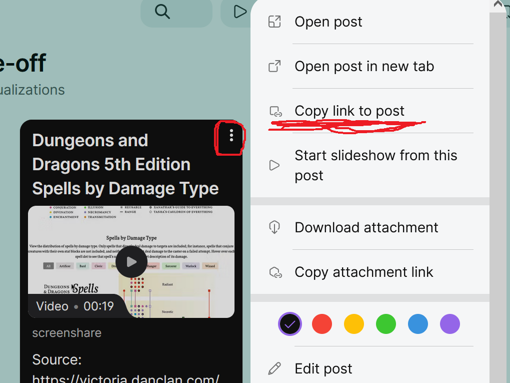

Assignment 2: Evaluating Visualizations
AI Use Policy for Assignment 2
| Ok or nah? | For what? | Examples |
|---|---|---|
| This is a solo critical-thinking assignment | ❌ Do not use AI to find or select your visualizations. ❌ Do not use AI to write, draft, or refine your evaluation or critique. ❌ Do not use AI to describe what a visualization shows or identify its strengths/weaknesses. |
If you do choose to use AI for any part of this assignment, please disclose it and include a link to the chat.
Objective
Data visualizations are everywhere now: on Twitter/X, in news articles, in TikToks, in policy debates. Some of them are great, and a lot of them are misleading (intentionally or not). Being able to look at a chart and quickly figure out whether it’s telling the truth is a skill that matters way beyond this class. In this assignment you’ll practice that skill (and also the skill of articulating your reasoning to others) by finding real examples in the wild and breaking down what makes them work or fall apart.
Search the internet, newspapers, textbooks, or other sources for examples of data visualization (look for ones we haven’t already looked at in class). Find two (2) different visualization examples, one you believe to be effective and one you believe to be ineffective or misleading. Come prepared to analyze and present your examples to the class. We will hold a Bake-off style competition to determine the best and worst visualizations. The winners will receive BOUNTIES.
This is ambiguous on purpose. Maybe it’s genuinely well-designed. Maybe it’s sleek and clean but actually a little misleading. Maybe the topic is so compelling that you think people will vote for it regardless. You’re trying to win by popular vote, so you may want to be strategic.
This is intentionally ambiguous. Maybe the visualization is genuinely bad. Maybe it’s actually fine but you think most people would find it hideous. You’re picking the entry you think will win via popular vote, so consider strategery.
Where to Look
Look in any publication or internet resource that communicates information.
- Some good examples can be found on government websites, old textbooks, depressing blogs, Reddit and Twitter.
- Avoid compiled internet lists e.g. “Top 10 best/worst visualizations.”
- Your vis should be found “in the wild” (finding a vis on a critique site is not grounds for losing points though, especially if it’s really juicy or gotten a lot of internet hate).
Please take note whether your source has a pay-wall. If it does, you’ll need to post a screenshot to the Padlet, not just the link, so other students can get to it. If it’s interactive, use the Screen Record function in Padlet to post a snippet.
Paywalled visualizations will be auto-deleted by the platform, and your submission will be marked incomplete.
Posting Guidelines
- Post your entry on the Padlet as an image or screen recording if it’s an interactive vis (I did an example of this in The Best Padlet).
- Make sure you include the link to the source for your image. Include a very short descriptive title (whatever the source uses is fine).
You can directly copy-paste the url into the Padlet without doing a “Create Post” with the plus button, and it will try to create a good thumbnail for you. However I’ve found that most of the time it’s not the image I want. Best bet is to actually drag/upload the image onto the padlet, and put the url in the description.
No duplicates! Before you post, scroll through and make sure someone hasn’t already posted it! If they have, find a new one!
Once you’ve posted your vis, click the three dots in the top right of your post and select “Copy link to post.”. Go to Blackboard and copy the link to your post to your Assignment 2 Google Doc in the designated spot.

Including the links to your padlet submission in Blackboard counts as the official submission for credit, so ensure you have enough time before 9:00 pm to complete these steps. The late policy is 5 pts / minute past 9:00 pm, since the next day’s activity depends on the posts and I have to create it based on your submissions.
Submission Instructions
Part 1 (BEST)
Before 9:00 pm:
- Post your “Best Vis” entry on this padlet: THE BEST
- Copy the link to your Padlet post to your Assignment 2 document (click the three dots in the top right of your post and select “Copy link to post.”)
- Every semester one person pastes the link to the vis source, not the link to their padlet post. Don’t be that person in 2026. Say yes to the three dots.
- Using the concepts from class (marks, channels, expressiveness, effectiveness) evaluate the vis by filling out the evaluation doc in Blackboard for THE BEST. Make sure you press Submit!
Part 2 (WORST)
Before 9:00 pm:
- Post your “Worst Vis” entry on this padlet: THE WORST
- Copy the link to your Padlet post to your Assignment 2 document (click the three dots in the top right of your post and select “Copy link to post.”).
- Every semester one person pastes the link to the vis source, not the link to their padlet post. Where does this person come from. Where do they go. We may never know because I can’t find their submission.
- Using the concepts from class (marks, channels, expressiveness, effectiveness) evaluate the vis by filling out the evaluation doc in Blackboard for THE WORST.. Make sure you press Submit!
Grading Rubric
Late Policy
I like to be flexible where possible, but since late submissions will disrupt the class activity, the late policy for this assignment is 5 pts / minute past 9:00 pm.